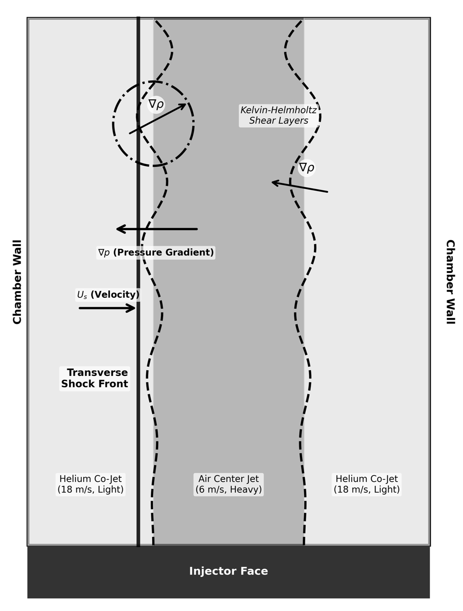
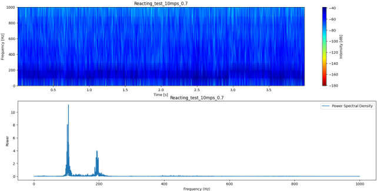
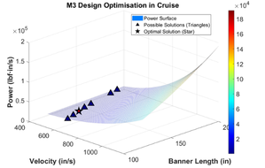
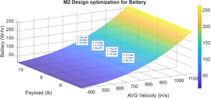
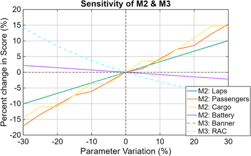
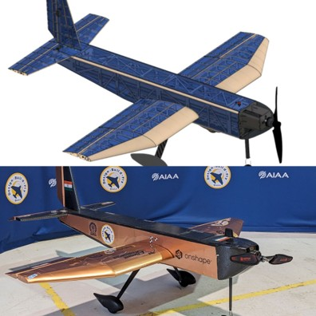
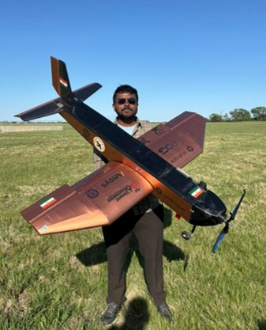

Investigating pressure-density coupling and complex baroclinic vorticity generation across an air-helium interface.

Schematic of transverse pressure interaction with Coaxial flows
Developed an end-to-end CFD framework in ANSYS Fluent to simulate baseline shock interactions and RMI onset.
Figure: Side-by-side numerical Schlieren and Helium mass fraction capturing flow instabilities.
Designed the test rig, utilizing Schlieren for high-speed optical diagnostics of shock-wave interactions.
Characterized vertical dump combustor instabilities by identifying dominant acoustic modes. Performed FFT and spectrogram analysis on Kistler pressure-sensor data acquired through a high-speed DAQ system, maintaining a custom water-cooling loop for sensor fidelity.

FFT and Spectogram analysis in one of the test case
Summer Research Intern. Developed a custom computer vision pipeline using YOLOv11n and Faster R-CNN, integrated with a Luxonis OAK-D SR depth camera for real-time wave height estimation to forecast sea conditions.
Led the 3D CAD design of the Pushpak aircraft using Onshape for the AIAA Design/Build/Fly competition (Ranked 39th globally). Engineered custom deployment mechanisms and fabricated the structural airframe using aeroply, balsa, and composite materials.
Proposal Phase Optimization & Trade Studies: Developed custom numerical sizing pipelines to mathematically evaluate performance spaces, optimize flight parameters, and maximize score leverage before fabrication.

M3 Design Optimisation in Cruise

M3 Design Optimisation for Battery

Sensitivity Analysis of M2 & M3 Parameters

3D CAD design of the Pushpak aircraft

Fabricated structural airframe and custom mechanisms